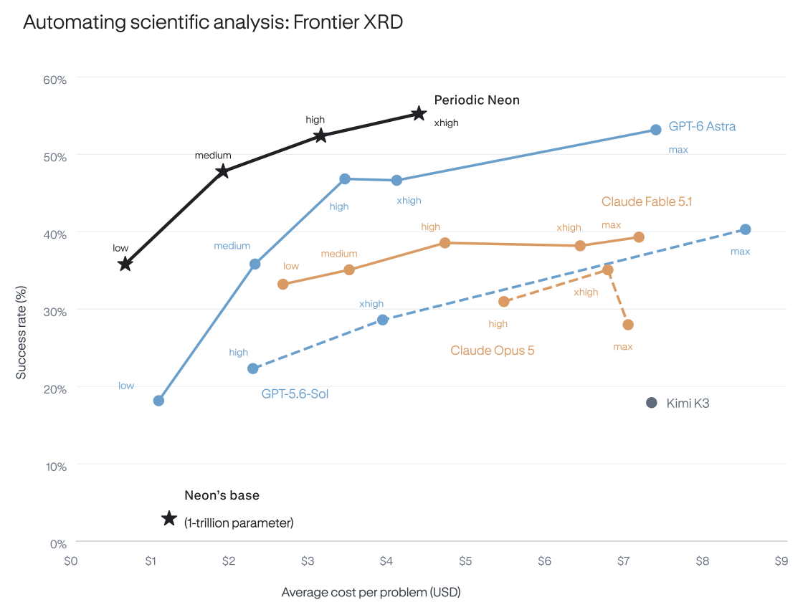
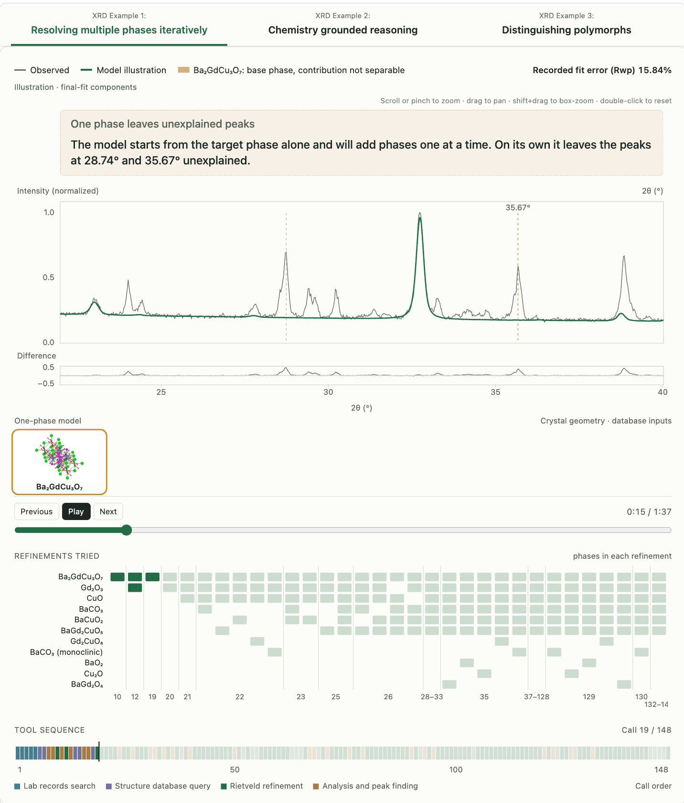
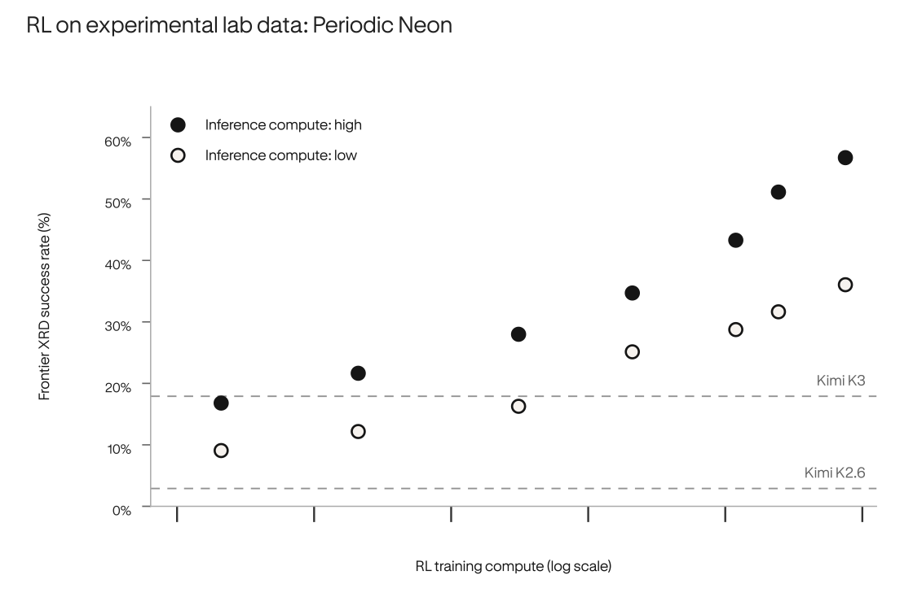
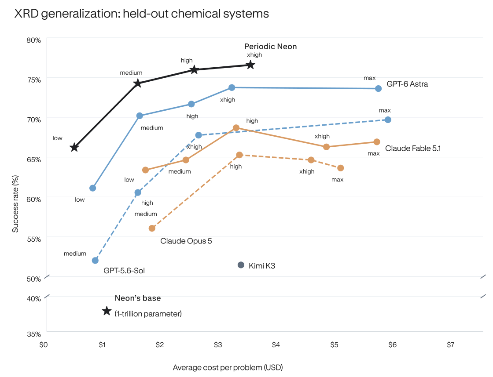
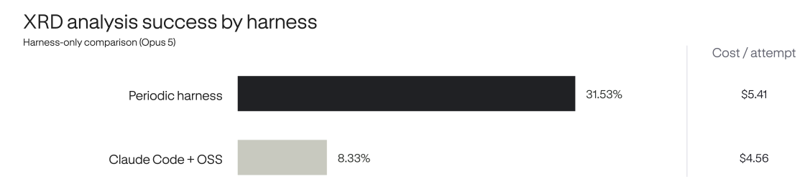
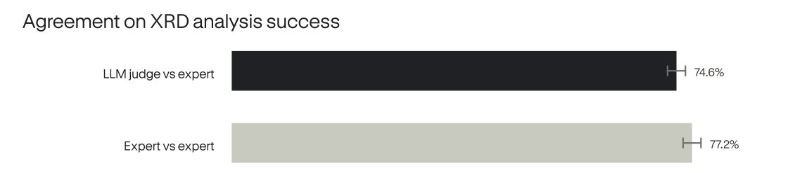
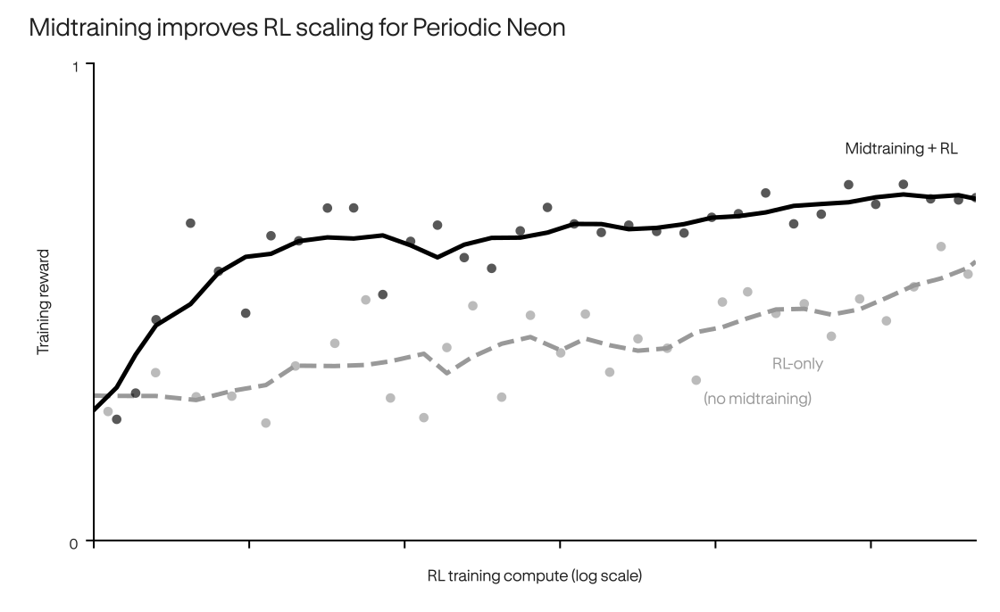
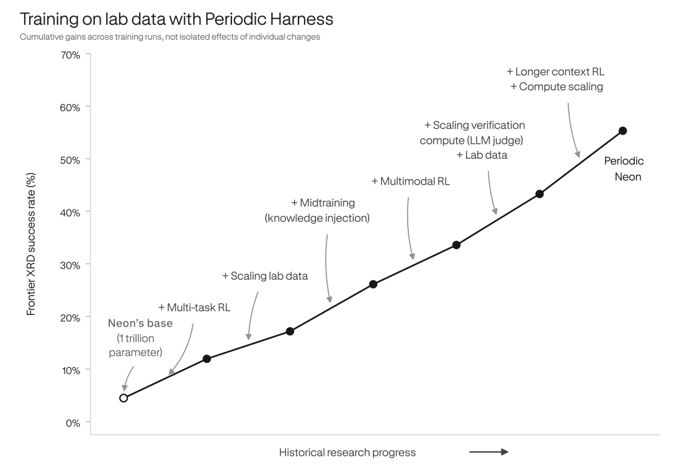

Nature Is Our Learning Environment
Using data from our own labs, we trained Periodic Neon to outperform GPT-6 Astra and Claude Fable 5.1 at lower cost, on a highly challenging evaluation for scientific analysis. Neon is now deployed in our labs, analyzing experiments in our search for better superconductors and magnets.
X-ray diffraction (XRD) analysis is a critical capability for our discovery efforts. Scientists can spend hours navigating scientific software, related experiments, literature, and databases to analyze complicated XRD measurements. Periodic Neon achieves a 55.3% success rate on our most difficult internal evaluation set, FrontierXRD. This is a 20x improvement over the initial 2.7% success rate of Kimi K2.6, the open-weight model we post-trained. Through midtraining and reinforcement learning on our lab data, Neon establishes a Pareto-optimal cost-performance frontier.

Periodic Neon surpasses frontier models on FrontierXRD at a lower cost per analysis. We report performance on 134 samples from our labs that human experts take hours to resolve due to their complexity and ambiguity. All models use the Periodic Harness, which outperforms off-the-shelf coding harnesses like Claude Code or Codex for our use cases. Here, we measure success rate using an LLM-Judge ensemble of Opus 5 and GPT-5.6-Sol, calibrated against expert ratings. For all external models, we estimate cost based on standard API prices assuming perfect caching across agent turns. For our model, we calculate the cost by using the system throughput per H200-hour and $2.5/hour H200 price.
What is XRD?
A synthesis experiment may begin with a target material and carefully chosen precursors and conditions, but the product can contain a mixture of the target phase, unreacted precursors, and unexpected byproducts. Before deciding what to try next, scientists need to determine what formed and in what proportions.
Powder X-ray diffraction (XRD) is one of the primary tools to answer this. We shine X-rays on the powder and measure how they scatter. Because the atoms in a crystal are arranged in a repeating pattern, each crystalline phase produces a characteristic pattern of peaks, a fingerprint of its atomic structure. Peak positions reflect lattice spacings and crystal symmetry. Their intensities depend on which atoms are present, where they sit, and the amount of each phase. In a multiphase powder, patterns overlap, making it difficult to identify phases and estimate proportions, even for experts.
It’s critical to understand if experiments successfully synthesize their target phase, but as we scale our autonomous labs, scientists can no longer keep up with analyzing XRD results manually. A successful XRD analysis can require reasoning about synthesis conditions, prior experiments, thermodynamic calculations, and crystal structure databases. Automating this kind of long-context agentic work frees up hours of scientist time, enabling them to supervise many more experiments.
An X-ray diffractometer from our lab. Neon learns from XRD data produced by instruments like these. See the expandable boxes for more background on XRD.
Difficulty of our XRD evaluation
Existing XRD software is powerful, but it works best after a scientist has narrowed down what to look for: which elements could be present, which phases are plausible, and which fits make chemical sense. In synthesis for materials discovery, that is often the hard part. A sample may contain multiple phases and the right answer depends on context such as the precursors, temperature, atmosphere, environment, handling history, related samples, literature, energetics, and simulations.
Scientists use automated tools, but they guide those tools with judgment: expanding the search when something unexpected appears, ruling out phases that are chemically unreasonable, and revising hypotheses when the fit looks good mathematically, but fails scientifically. For example, an oxide may make sense if the sample was heated in air; a hydroxide may only make sense if moisture exposure was possible. For complex samples, this holistic interpretation can take several hours of expert time per pattern. Our evaluation focuses on these harder, multiphase cases. Among patterns with an accepted solution, the fits contained five phases on average.

Interactive demo of XRD analyses from Periodic Neon, showing highlights of the model’s reasoning as it considers different hypotheses for what phases are present in the sample given the XRD pattern.
These results strengthen our conviction that scaling our autonomous labs and the AI systems that learn from them will allow us to tackle scientific questions beyond our reach today. Our final training run used 1,300 H200 GPUs, far less than Astra’s reported 100,000+ Blackwell GPUs. Scaling our training compute to levels comparable to today’s frontier models will unlock even greater scientific capabilities.

Scientific analysis performance for Periodic Neon improves as we scale RL training compute on experimental lab data, with further gains from higher inference compute. Kimi K3 illustrates a potentially stronger open-weight starting point for future training of Neon. Together, these observations motivate scaling our autonomous labs alongside the AI systems that learn from them.
To evaluate Neon’s generalization beyond FrontierXRD, we also evaluate its performance on XRD measurements from our labs’ chemical systems held out from both midtraining and RL. Neon outperforms frontier models on this evaluation, indicating that it learns transferable XRD analysis capabilities that extend beyond the chemical systems it encounters during training.

We evaluate Neon’s generalization on 198 experimental XRD measurements using held-out chemical systems. Specifically, our lab data training split for both reinforcement learning and midtraining excludes these systems and any systems containing them, while smaller subsystems can appear in training. This benchmark tests generalization to held-out chemical systems, but is easier than FrontierXRD, which focuses on samples that are difficult to resolve even for human experts.
Beyond scaling training compute on our lab data, Neon benefited from several infrastructure and research improvements, some of which we highlight below.
Scientific Harness: Scientific capability depends on more than the model intelligence alone. It also depends on the affordances available to the model, such as scientific databases and tooling. Against a harness based on Claude Code with standard XRD tools, Periodic’s scientific harness achieves a 3.8x higher XRD analysis success rate at a similar cost per analysis. We use Periodic’s scientific harness for all our model comparisons, including in the Pareto plot above.
Periodic harness versus Claude Code with standard XRD tools
We build a harness equipped with laboratory context, in-house materials structure and simulation databases, and scientific XRD analysis software. Our comparison gives Claude Code access to open-source databases (COD, Materials Project), and analysis software (BGMN), representing a typical scientist’s toolkit without access to our internal infrastructure. Both harnesses therefore have appropriate tools for the task. Using the same underlying model (Claude Opus 5 with high reasoning effort), our harness delivers better performance on FrontierXRD than Claude Code + OSS databases and software.

RL Beyond Verifiable Rewards: Science is falsifiable, but not easily verifiable: in our setup, XRD analysis success cannot be cheaply verified based on pattern-fitting alone. Instead, it requires expert scientific judgment to determine whether each phase is supported by the pattern and whether it makes chemical sense. To learn from our lab data, we turn this expert judgment into a reasoning-heavy LLM-judge that achieves nearly the same level of agreement scientists reach with one another.
LLM-Judge agreement with human scientists
To evaluate the quality of an XRD analysis, we devised a detailed rubric and had a team of human experts with PhDs in materials-related disciplines provide quality labels for thousands of XRD patterns. Each pattern was annotated by three experts. We then used an ensemble of two agentic LLM judges to also provide quality labels for each of the patterns and compared agreement among human experts with agreement between human experts and the LLM-judge ensemble. We found that human experts agreed 77.2% of the time, while the LLM-judge ensemble agreed with human experts 74.6% of the time. When comparing LLM-Judge to an expert consensus, they agreed 84% of the time. This agreement provides evidence that the LLM-judge can supply training and evaluation signals for a task where neither ground-truth labels exist nor pattern-fitting suffice.

Scientific Midtraining: We midtrain Periodic Neon on a multimodal blend of academic literature, code, and experimental data to build broad scientific understanding. Our proprietary midtraining corpus is rapidly expanding, currently doubling every month. We observe that injecting scientific knowledge through midtraining improves downstream RL performance.
Midtraining Improves RL scaling
Despite only a small fraction of the midtraining data focusing on XRD, early ablations on midtrained Neon show higher rewards during subsequent RL training and higher success on FrontierXRD.


Starting from an open-weight model with 1 trillion parameters, we improve its scientific analysis capabilities through continued advances in training on experimental lab data. Each point represents a separate RL training run, with annotations approximately highlighting the major change between runs. All results are reported using Periodic Harness and high inference-compute setting.
Looking back, our progress was a result of scaling compute on our lab data along with several research and infrastructure advances such as long-context multimodal RL, as illustrated by cumulative gains from these advances in the above figure. We are now also training on a wider set of scientific workflows across our labs, using our AI systems for designing, running, and learning from experiments. Additionally, we encourage you to check out our post on the AI infrastructure that made this research possible.